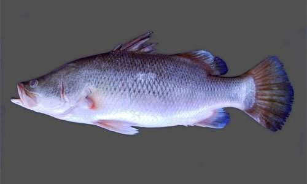
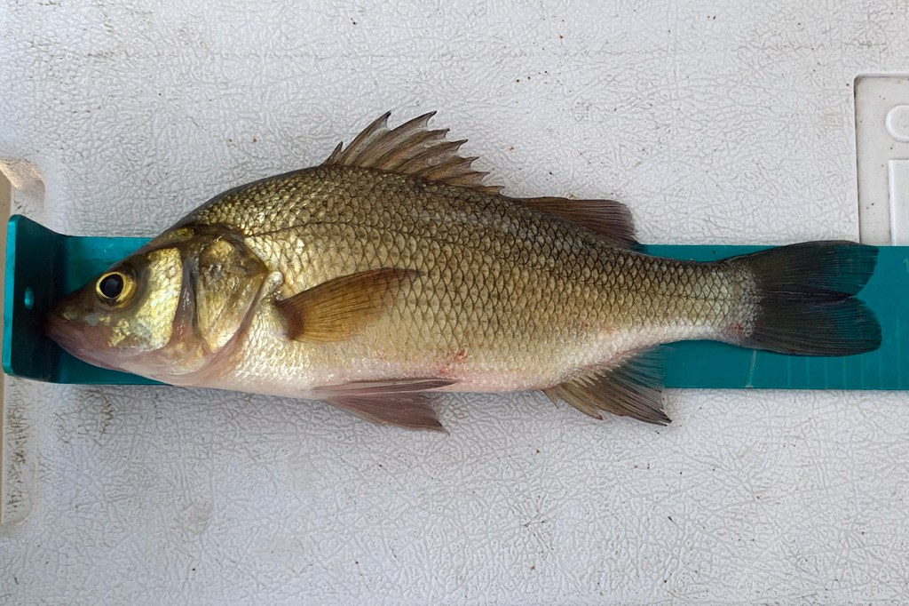
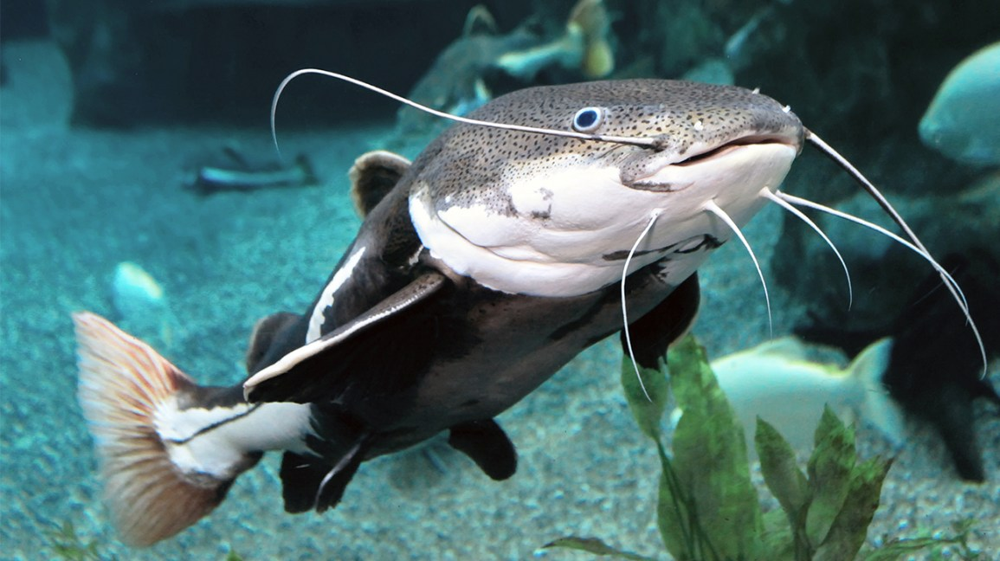
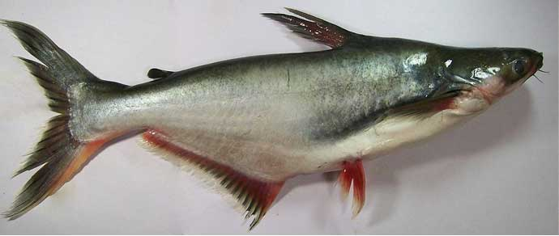
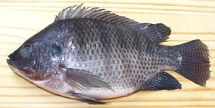
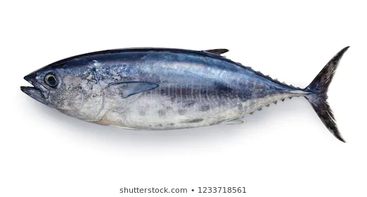
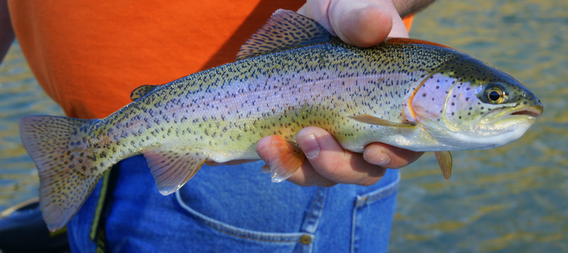
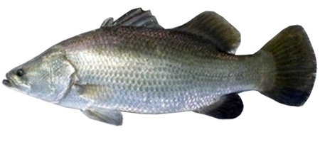

Recirculating aquaculture systems or RAS fish farming methods are used in home aquarium.
And the RAS fish farming systems are also used for fish production where water exchange is limited and the
use of biofiltration is required for reducing toxicity.
Other types of environmental control and filtration are
often also necessary for maintaining clean water
and for providing a suitable habitat for the fish.Tthe main advantage of RAS fish farming
system is the ability to reduce the need for fresh and clean water while still maintaining a healthy
environment for fish.
The main system has a simple design which consists of fish tanks,mechanical filter, biofilter,
trickling filter or degrasser, oxygen enrichment unit and UV disinfector. You also need some extra
facilities such as pH regulator, heat exchange unit, denitrification unit etc.
The RAS fish farming system must have high fish stocking densities to be operated economically and
commercially. Many researchers are currently conducting studies for determining if RAS fish farming
is a viable form of intensive aquaculture. Currently, is one of the fastest growing sectors in
agriculture because of the growing demand for protein-rich food. And farming fish commercially can
be a great way for earning some extra cash. RAS fish farming system can be a very good way for
earning some extras.
RAS fish farming system design
The basic operating principle of these systems that the water from the fish tank moves through the mechanical filter and then through biological filter [the water is stripped of carbon dioxide before getting aerated and is returned back to the fish tanks.]
Required tank size for RAS fish farming
The tanks used for RAS fish farming system can be of any size and shape.
The tank can be rectangular, circular, oval etc. Mostly the circular or oval tanks are preffered for
RAS fish farming system, because they are easier to clean and also facilitate easy water circulation
when compared to rectangular tanks. size of the tanks can vary from 500 gallons to 500k gallons
depending on the available facilities. The capacity of the tank depends on the factors like type of
fish, stocking rate, water requirement and quality. the materials which are used for making the tanks
can be wood, glass, rubber, metal, concrete or plastic.
Today, most of the modern tanks are being constructed with outlets that
have optimal waste removal capacity and are fitted with suitable mesh screens.
These outlets should also make removal of dead fish easy.
Raceway tanks are also used which is a blend of circular and rectangular shapes.
These tanks have a wall in the center for faciliating circulation.
There should be a constant flow of water in RAS fish farming system, and there should be a possibility to alter the speed, pressure and direction depending on the requirement. Generally the movement of water is controlled through gravitation and before it is used in the system, the water is generally pumped to an elevation from where it begins to flow. Generally the centrifugal pump is most commonly used in the RAS fish farming system. Usually the pump is placed outside the tank and operates at a high pressure.
Mechanical filtersMechanical filters are required for removing the waste from the fish tank. Currently, modern recirculating systems have an outlet with a filter called the micro screen of mesh size 40 to 100 microns. The presence of the micro screen has some advantages such as it reduces the load on biofilter, removes the organic impurities and improves or facilitates the biofiltration process.
Biofilters
Biofilters are the most important component of RAS fish farming system, because it helps
in removing the fine pollutants from water during waste treatment.
The biofilters are generally made up of materials like plastic sheets,
beads, gravel, sand and lava rock.
A simple biofilter can be a wheel, barrel or box filled with media on
which nitrifying bacteria grow. It can be made of plastic, grass, metal,
wood or concrete. And the size of the biofilter defines the fish caring capacity of the
entire system.
Biofiltration can be done effectively only if the temperature and
pH level of the water are regulated properly. The minimum temperature
of the water should be between 10°C and 35°C, and the pH range should be between 7 and 8.
Low and high pH level may
result in inefficiency of the filter and higher toxic effect respectively.
The presence of waste in the tank decreases the amount of dissolved oxygen content in water and increases the demand for oxygen (thereby lowering the density of fish in the tank). So a sump or a clarifier tank is used for collecting the excess waste at a slow rate. The shape of the sump should be of V shape so as to facilitate easy cleaning.
DegrassingAccumulated gases in the fish tank should be cleared by providing proper aeration. And this method is called stripping. Supplying air into the tanks can drive the gases away through turbulence. And a trickling filter system is often used for this process.
Aeration or oxygenationProviding oxygen supply to the water in the tanks is called aeration. Cool and warm water recirculating systems need 6 and 8 ppm oxygen respectively for bacteria and fish to survive. The tanks which have high load carrying capacity should be able to replace oxygen every 20 to 30 minutes. So there should be a proper and regular supply of oxygen otherwise it could lead to loss of fish and also there should be a back up. Blowing air through a submerged air stone is the commonly used method for aerating the tank. If you can provide sufficient aeration, then there is no need for a distinct carbon dioxide stripping unit.
Types of WastesThe solid wastes present in the tank can be divided into 3 types. Here we are describing more about these 3 types and also their removal methods.
Ammonia and nitrate toxinsThe process of detoxifying ammonia is called nitrification. Converting ammonia nitrogen to less toxic nitrogen dioxide and finally to non-toxic nitrate through bacterial action is the principal of nitrification.
De-nitrification
The end production of nitrification process is nitrate and is non-toxic in nature, but the
presence of nitrate beyond 100 mg/l has a negative impact on the growth of the fish and feed
conversion. Supplying fresh water regularly to the tank can keep the levels of nitrate low.
But the main aim of recirculating system is to maintain or lower the water consumption rate.
Therefore a process called de-nitrification is adopted.
The de-nitrification process is required if the supply of water is less than 300 litters per
kg of feed. The minimum amount of methanol required for de-nitrification is 1 kg of nitrogen is
about 2.5 kg. The de-nitrifying chamber
is fitted to the biofilter with residence time of 2 to 4 hours.
The pH level of the water should be maintained to a balanced ratio for ensuring the fish to survive well. The tolerable range or limit of the pH level is between 6 and 9.5. pH of the RAS fish farming system can be maintained by adding buffers like sodium bicarbonate and calcium bicarbonate.
Feeding the fishYou should provide feed in accordance to the growth, body weight and activity of your fish. On average you should feed your fish with 4%-5% food daily of their total body weight. For example, if the total body weight of the fishes is 100 kg, then you should provide your fish with 4 to 5 kg foods daily. Provide the feeds twice a day. 2-2.5 kg at morning and another 2-2.5 kg during evening. Always try to feed your fish with high quality feeds. You can also purchase the ready-made commercial fish feeds.
Types of fishes are suitable for RAS fish farmingRecycled water is much warmer than natural water. And cold water fish species such as salmon are not good for RAS fish farming system. Barramundi, carp fishes, perch, catfish, pangasius, white fish, tilapia, blue fin tuna, rainbow trout, seabass and sturgeion are very good for RAS fish farming system.
|  |
 |
 |
| berramundi | carp fish | perch |
|  |  |  |
| cat fish | pangaasius | tilapia |
|  |  |  |
| bluefin tuna | rainbow trout | sea bass |
It is important to keep the production of fish in line with the capacity of the RAS fish farming system. Many methods are used for avoiding overloading of the system with heavy stocking density. Some of the methods are mentioned here;
Fish farming can be properly done only if there is a regulated control and monitoring system within the RAS fish farming system. A central system for controlling and monitoring of certain features like oxygen levels, pH range, water levels and other functions is deployed for efficient handling of the system. You can install and use automatic sensors or alarms for indicating when a problem arises. These are the common RAS fish farming systems. If you don’t have enough space for making earthen or natural pond, then you can try this system for fish farming.
RAS fish farming equipment price